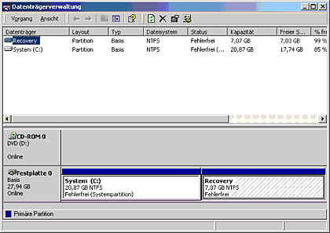
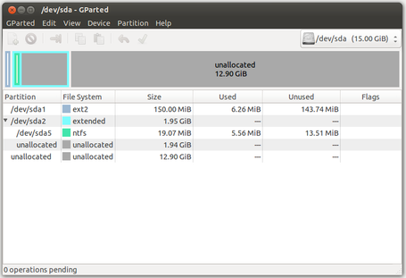

Wiki
Mitmachen
- Wikiartikel anlegen
- Howto anlegen
- Wiki-Referenz
- Wiki-Syntax
- Baustellen
- Artikelideen
- Ungetestete Artikel
- Ausbaufähige Artikel
- Fehlerhafte Artikel
- Rund ums Wiki
Konfiguration
- Backlinks anzeigen
- Exportieren
Vorüberlegung
Dieser Artikel ist Teil des Artikels Manuelle Partitionierung.
Welche Partitionen sind in welcher Größe vorhanden¶
Diese Frage kann man entweder über Windows beantworten, oder über GParted. Aus Windows heraus startet man über "Start -> Ausführen" die Datenträgerverwaltung mit der Eingabe von
diskmgmt.msc
Hat man den Rechner mit der Ubuntu Live-CD gestartet, ist das Programm GParted die richtige Wahl:
| Ausgabe der Windows Datenträgerverwaltung | Ausgabe von GParted |
|  |  |
Die in diesem Beispiel gezeigte Festplatte hat eine Größe von 27.94 GB und ist in zwei Partitionen unterteilt:
System ( C: ), 20,87 GB; -> Hier befindet sich das Betriebssystem und eventuell die Dateien, die man auf seinem Rechner abspeichert.
Recovery 7,07 GB -> Die Recoverypartition auf diesem System ist eine versteckte (hidden) Partition. Sie steht im normalen Betrieb nicht zur Verfügung und dient im Allgemeinen dazu, das Betriebssystem wieder auf seinen Auslieferungszustand zurückzusetzen.
In der Ausgabe von GParted ist am rechten Rand noch ein 7,84 MB großer, nicht zugeteilter Bereich zu erkennen (markiert). Dieser wird von Windows standardmäßig frei gehalten, um eine spätere Konvertierung der Partitionen in ein logisches Volume zu ermöglichen. Da man in der Regel eine solche Konvertierung nicht durchführt, kann dieser Platz zusätzlich genutzt werden.
Hinweis:
Die Ausgaben auf verschiedenen Systemen können ganz unterschiedlich sein. Das hier gezeigte ist nur eine "so könnte es aussehen"-Situation und in keinem Fall eine "so muss es aussehen"-Situation.
Die "Recovery"-Partition wird unter dem Betriebssystem Windows Vista eventuell nicht angezeigt.
Wie viele Partitionen zusätzlich¶
Da in diesem Fall Ubuntu installiert wird, benötigt man erst einmal Platz für das Betriebssystem: Unter Linux "/" (root)
Normalerweise nicht unbedingt nötig, aber stets zu empfehlen ist eine eigene Partition für den Benutzerbereich, was unter Windows in etwa dem Ordner "Benutzer" (ab Vista) oder "Dokumente und Einstellungen" (2000/XP) entspricht. Auf dieser Partition werden nahezu alle individuell vorgenommenen Einstellungen gespeichert (Farben, Hintergrundbild, E-Mail-Zugang usw.). Dadurch erleichtert man sich künftige Aktualisierungen und/oder Neuinstallationen des Systemes erheblich, da die alten Einstellungen nicht überschrieben werden: Unter Linux "/home"
Linux benötigt standardmäßig eine eigne Partition für die Auslagerungsdatei: Unter Linux "/swap"
Will man ein verschlüsseltes System installieren, benötigt man zusätzlich eine separate unverschlüsselte /boot-Partition. Dies trifft ebenfalls zu, wenn man ein vom Bootlader Grub nicht unterstütztes Dateisystem wie Btrfs verwenden möchte.
Es sind also neben den vorhandenen Windowspartitionen noch drei bzw. vier zusätzliche Partitionen nötig.
Platzbedarf für zusätzliche Partitionen¶
Die folgenden Größenangaben sind keine verbindlichen Werte, sondern werden nur in diesem Beispiel verwendet. Die Bemerkungen dahinter geben Hinweise auf Größenanpassungen:
Für "/": 6 GB -> 10 - 15 GB sind als optimal zu betrachten
Für "/home": 9 GB -> Sollte reichlich bemessen sein, da hier neben den Einstellungen der Programme auch die eigenen Dokumente aufbewahrt werden.
Für "/swap": 1 GB -> Die Größe des swap-Speicher hängt von einigen Faktoren ab. Als Faustregel wird oft die Größe des installierten RAM + 20-30% genannt. Wer genug Platz hat, sollte diese Regel anwenden. In diesem Beispiel wird der swap-Speicher aber sehr selten benötigt, da kein Suspend to disk benutzt wird und der verfügbare RAM für den normalen Betrieb völlig ausreichend ist.
Insgesamt sind also ca. 16 GB zusätzlich nötig.
Zusammenfassung¶
Am Ende sollte die Festplatte also neben den vorhandenen zwei Partitionen drei zusätzliche Partitionen bekommen. Wird, wie in diesem Fall, die Gesamtanzahl von vier Partitionen überschritten oder sollen zu einem späteren Zeitpunkt weitere Partitionen hinzugefügt werden, so legt man statt einer primären Partition eine erweiterte Partition an, die viele weitere Partitionen enthalten kann (Details siehe Partitionierung/Grundlagen). Die Partitionen werden in diesem Beispiel folgendermaßen angelegt:
Windows, 4 GB -> Größe in diesem Beispiel nur möglich, da wenig eigene Daten auf dieser Partition liegen
Recovery, ca 7 GB -> Soll erhalten bleiben, um den Auslieferungszustand von Win wieder herstellen zu können
Erweiterte Partition, Rest der Festplatte, darin liegend:
/swap , 1 GB -> Auslagerungsdatei bzw -partition
/, 6 GB -> Enthält das Betriebssystem Linux
/home, Restplatz (ca. 9 GB) -> Für Einstellungen und eigene Dateien
Diese Revision wurde am 5. Juli 2016 09:16 von lionlizard erstellt.
- Erstellt mit Inyoka
-
 2004 – 2017 ubuntuusers.de • Einige Rechte vorbehalten
2004 – 2017 ubuntuusers.de • Einige Rechte vorbehalten
Lizenz • Kontakt • Datenschutz • Impressum • Serverstatus -
Serverhousing gespendet von